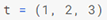
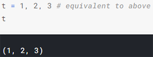
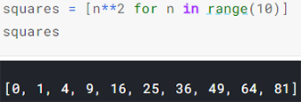

Python
Kaggle
The docstring is a triple-quoted string (which may span multiple lines) that comes immediately after the header of a function. When we call help() on a function, it shows the docstring:
The last two lines of the docstring are an example function call and result. (The >>> is a reference to the command prompt used in Python interactive shells.) Python doesn't run the example call - it's just there for the benefit of the reader. The convention of including 1 or more example calls in a function's docstring is far from universally observed, but it can be very effective at helping someone understand your function.
Without a return statement, least_difference is completely pointless, but a function with side effects may do something useful without returning anything (print() and help() don't return anything).

I'm safe from today's weather if...
I have an umbrella...
or if the rain isn't too heavy and I have a hood...
otherwise, I'm still fine unless it's raining and it's a workday.


list.append modifies a list by adding an item to the end:
list.pop removes and returns the last element of a list:
Tuples are almost exactly the same as lists. They differ in just two ways: 1 - the syntax for creating them uses parentheses instead of square brackets; 2 - they cannot be modified (they are immutable).
Tuples are often used for functions that have multiple return values. The as_integer_ratio() method of float objects returns a numerator and a denominator in the form of a tuple:
These multiple return values can be individually assigned as follows:
Here's how we would do the same thing without a list comprehension:
(You could think of these three lines as SELECT, FROM, and WHERE.)
Here's a solution using a list comprehension:
In addition, Python's triple quote syntax for strings lets us include newlines literally (i.e. by just hitting 'Enter' on our keyboard, rather than using the special '\n' sequence). We've already seen this in the docstrings we use to document our functions, but we can use them anywhere we want to define a string:
str.split() turns a string into a list of smaller strings, breaking on whitespace by default. This is super useful for taking you from one big string to a list of words:

Occasionally you'll want to split on something other than whitespace:
str.join() takes us in the other direction, sewing a list of strings up into one long string, using the string it was called on as a separator:
Python lets us concatenate strings with the + operator:
A for loop over a dictionary will loop over its keys: